Invoice Lifecycle Solution Summary
Logical Feature Specification · Sequence and Reuse Assessment · Feature folder
Revision overview
This separate draft develops SPEC-SEI-009 into the same three reading views as sending and receiving. It adds the four supplied French lifecycle guides, the transition-outcome note and the Annex II file named 21-10-26. SPEC-SEI-009 stays unchanged and remains the selected source for stable Confluence page 923861398.
Existing LCS activities, requirements, acceptance IDs, independent outcome dimensions, reporting duties and historical-route controls retain their meanings. The new analysis assesses the existing French API as the first reuse candidate. It does not approve Spain API coverage, an automatic translation of French statuses or a lifecycle release change. Country configuration, fields, correction support, deployed coverage and guide conflicts remain open.
1 Problem and intended outcomes
A Spanish business must see what happened to an invoice, who reported it and what needs action. A delivered invoice can be rejected or partly paid. A saved payment fact can have a public report still pending. A failed attempt to change status must remain visible without replacing the last successful status. REF-PRODUCT; INT-LCS05; LCS-R03/08/14.
The product outcome is an explainable history and current view with separate technical, validation, delivery, commercial, payment and reporting information. The buyer, seller or authorised accountant can take a permitted action and see its outcome. Operations can recover uncertain reports without duplicating them. The logical view owns these rules; the API view assesses their implementation.
2 Scope and actors
| Situation | Observable outcome and boundary |
|---|---|
| Public or private platform supplies status evidence | Preserve source vocabulary and actor. Update only the dimensions supported by that evidence. |
| Buyer or seller records an authorised business event | Save the decision or payment fact and identify each applicable destination. Recording a fact and completing a report have separate results. |
| A transition fails | Keep the latest successful status. Retain the failed attempt and an owned corrective action. |
| A report succeeds at one destination | Show that destination's result while other destinations retain their own pending, failed or uncertain outcomes. |
| An event is corrected, arrives late or follows a platform change | Retain the original evidence and invoice context. Reconcile conflicts and uncertain mutations before repeating them. |
| Product misses an update | Recover saved Sage history. Discover an external event not yet received through a separately qualified source query. |
The business/authorised accountant supplies purpose-specific authority. The ERP supplies supported facts and displays results. The lifecycle capability preserves evidence and calculates the view and duties. The public or private platform returns its own result. Operations resolves blocked or uncertain actions. These are logical responsibilities; deployment boundaries remain engineering decisions.
PRD-SEI-224 distinguishes Phase 1 public consultation, Phase 2 provider mapping and Phase 3 recipient actions and reporting fan-out. This draft retains that scope. Payment initiation, dispute adjudication and automatic rectifying-invoice creation remain outside this feature. Optional customer actions still require the existing LCS-Q-OPTIONAL decision.
3 End-to-end flow


The existing diagram joins platform evidence and authorised customer facts at verification and source preservation. Unknown meaning or conflicting evidence goes to review. Valid evidence updates the supported view. The separate reporting process in SPEC-SEI-029 creates and reconciles destination-specific obligations. The French product flow adds asynchronous status attempts and history reads; it does not combine those outcomes.
4 Reuse direction and product impact
Assess the existing French status-update, notification and invoice-history APIs before proposing another product interface. The supplied guides show dataset/invoice scoping, a common envelope, status-specific statusAttributes, operation identity and saved history. These are credible reuse points. They do not prove how the implementation selects country rules or whether Spain events can be represented. INT-LCS01–05; API qualification in SPEC-SEI-030.
| Classification | Spain use and consequence |
|---|---|
| Reusable design patterns | Separate successful status from transition attempts; keep source history; notify after processing; read the resulting history. Actual code coverage remains unknown. |
| Shared capability with country rules | Reuse existing operations if the selected build supports Spain actors, fields, independent dimensions and per-destination reports. Products may retain call patterns, but Spain identifiers and payloads still need qualification. |
| Spain-specific | Annex II ApplicationResponse codes, issuer/recipient roles, 01/02 reasons, full-payment reporting, cancellation, legal applicability and calendars. These must not become France defaults. |
| Preferred transformation candidate | Assess existing DTS if it will create Spain ApplicationResponse XML. Confirm its build, mappings, rules, operations and fixtures; France invoice UBL support does not establish event-message support. |
| Unknown implementation coverage | A configurable country registry, Spain status UUIDs, correction commands, complete history schema, external report ownership and runtime readiness are not established by the guides. |
5 New Annex II review
The supplied Annex II contains the same eight event codes, 52 field/group occurrences and rejection reasons as the final BOE baseline. The comparison found no material change in the reviewed fields, cardinalities, descriptions or literal UBL paths after removing PDF wrapping and ordinal punctuation differences. The review note records exact pages and limits. SPFE-S22; REF-FIELDS.
The filename provides a date cue, but the document states no formal revision or superseding authority. Final published regulation remains the legal source. Existing ambiguous UBL paths and absent executable event formats remain open. This snapshot does not close Spain contract or implementation qualification.
6 Decisions that affect delivery
| Gate | Consequence, accountable role and required evidence |
|---|---|
| LIF-G01/02 — actual reuse coverage and model fit | API/Architecture owners must identify the build and prove country selection, independent dimensions, failed history and reporting results. A single French status field is insufficient evidence. |
| LIF-G03 — French guide conflicts | French API owner must resolve terminality, actor and blocked-transition conflicts against the selected schema and tests before using its matrix. |
| LIF-G04 — Spain event and XML coverage | Spain integration, DTS and Legal/Tax owners must qualify each Annex II field and cancellation sequence. Missing fields hold the affected action. |
| LIF-G05/06 — completion and safe recovery | API, Notifications and Operations owners must prove result correlation, idempotency, missed-event recovery and external uncertainty handling. |
| Existing country/authority/calendar and LCS-Q-OPTIONAL gates | Product, Spain Legal/Tax and integration owners select applicability, enabled actions and historical actors. A documented API action cannot approve release scope. |
REF Source references
| Source ID | Original source and version/date | Exact location | Supported claims and limits |
|---|---|---|---|
| REF-BASE | SPEC-SEI-009, updated 20 October 2026 | Parts 1–4; LCS controls and REF | Existing draft design, full provider assessment and preserved IDs; no runtime proof. |
| REF-PRODUCT | PRD-SEI-224, updated 7 October 2026; PRD-SEI-232; PRD-SEI-242 | Phase table; FR1–23; LS-FR and PEP-FR controls | Canonical product scope in recorded discovery/draft states; not new approval. |
| INT-LCS01–05 | Supplied guide evidence, received 22 October 2026, revision unknown | Five named sections | API patterns and supplied transition outcomes; Spain support and build unknown. |
| SPFE-S02 | Final BOE order, published 5 October 2026 | Articles 7–11; Annex II pp. 36–42 | Legal communication, authority and field baseline; not a complete runnable API. |
| SPFE-S22 | Supplied Annex II, filename dated 21 October 2026, formal revision unknown | Sections I.1–4 pp. 4–14; II/L1 p. 15 | Technical field snapshot and comparison; does not establish a legal amendment. |
| REF-FIELDS | Original field ledger; comparison note | AXII rows; per-message page comparison | Inventory and review evidence. Field bindings and acceptance execution remain unqualified. |